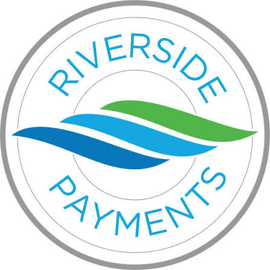

BYU Business Student | Accounting Interest | Excel, SQL, VBA, and Tableau
View Resume LinkedInI am a Brigham Young University business student pursuing accounting with strong interests in analytics, financial problem solving, and professional growth. My experience includes mentoring, sales, customer service, and coursework in information systems, finance, economics, and accounting.
03/2026 to Present
08/2023 to 08/2025

05/2023 to 08/2023
06/2022 to 09/2022
GPA: 3.7
Currently Enrolled: IS 201 (Intro to Information Systems), FIN 201 (Principles of Finance), ECON 110 (Economic Principles & Problems)
Completed: ACC 200 (Principles of Accounting), IS 110 (Spreadsheet Skills & Business Analysis), MGT 3050 (Foundations of Business), MGT 2050 (Legal & Ethical Environment of Business)
Team Captain, Varsity Cross Country (HS) • Scholar Athlete (4 years of HS) • Treasurer, National Honor Society (HS) • Member, BYU Accounting Society